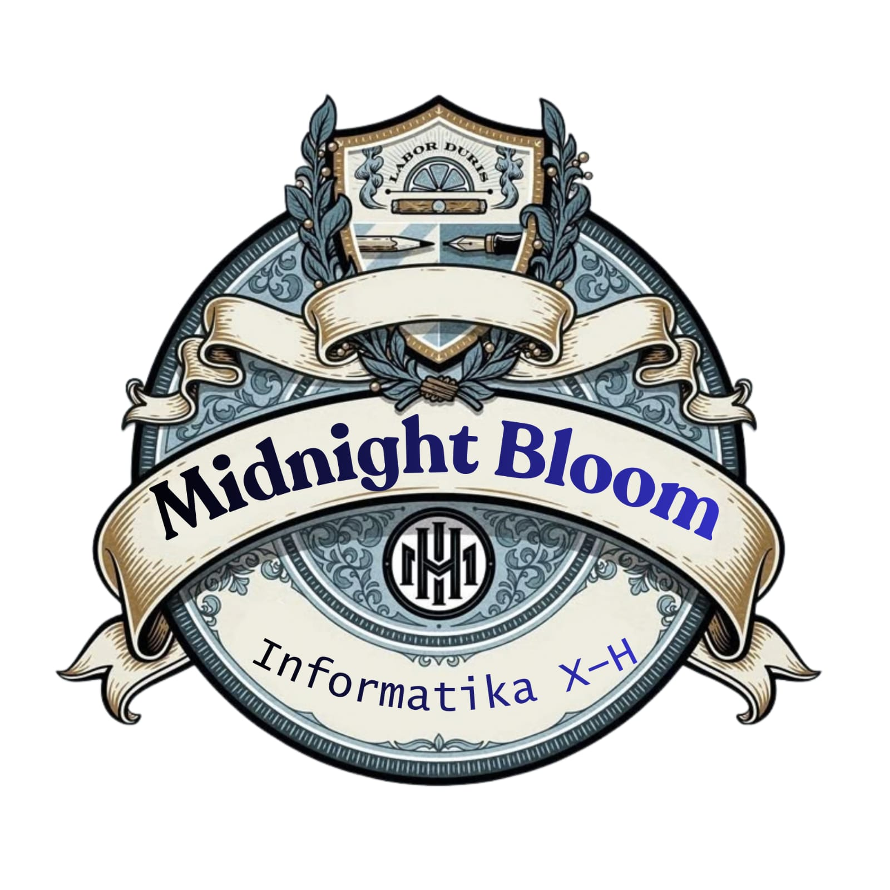

logo kami Midnight berarti tengah malam, yang menggambarkan ketenangan, misteri, dan ruang untuk berpikir kreatif. Sementara itu, Bloom berarti mekar, yang melambangkan pertumbuhan, potensi, dan perkembangan diri. Jika digabungkan, Midnight Bloom dapat dimaknai sebagai mekarnya kreativitas dan potensi di tengah ketenangan. Midnight Bloom yang terus berkembang, berani menciptakan ide baru, dan berusaha meraih masa depan yang lebih baik.- - - ...